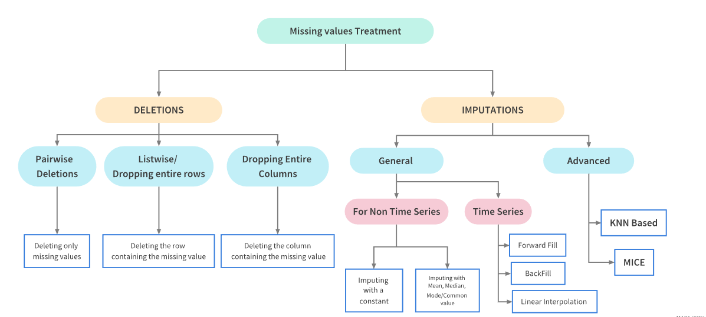

Lecture 4: Data Preparation
PSTAT100: Data Science - Concepts and Analysis
![]()
May 22, 2026
🚁 Overview
Aims of the lecture
- Study common data problems.
- Handling missing data.
- Searching for duplicate data.
- Fixing inconsistent data types.
- Labelling issues.
📚 Required Libraries
In this lecture we will be using the following libraries:
🧹 Tidy Data Review
Tidy Data Standard
Tidy Data Standard
For data to be tidy, it must satisfy the following three rules:
- Each variable is a column.
- Each observation is a row.
- Each type of observational unit forms a table.
- If only it were so easy…
Other CommonData Problems
- Missing values.
- Duplicate records.
- Inconsistent or incorrect data types.
- Dates, numbers as strings etc.
- Invalid values / outliers.
- Labelling issues.
Data Preparation
Data Preparation
What is data preparation?
Data Preparation
Data preparation is the process of cleaning and transforming data to make it suitable for analysis.
- When we load data from a file we take steps to fascilitate analysis.
- Typically this process involes:
- 🔍 Identifying what is wrong with the data.
- 🤔 Determining how to “fix” the problem.
- 🛠️ Updating and checking the result.
Missing Data
What causes missing data?
- Missing data can arise for a variety of reasons.
- Field was never collected.
- Data was collected but lost or destroyed.
- Data was collected but recorded incorrectly.
- Understanding the cause of missing data can be challenging. 🥲
- But it can help us make good decisions! 👍
How do we handle missing data?
- Two approaches:
- Deletion: Removing the missing data from the dataset.
- Imputation: Filling in the missing data with replacement values.
Missing Data Treatments
Treatment Dependencies

Missing Data
Libraries and Practice Data
Library
To graphically analyze the missingness of data we can use the Missingno Library, which provides a suite of tools for visualizing missing data.
Inspecting the Data
Let’s take a first look at the first few rows and the shape.
| Date | GameID | Drive | qtr | down | time | TimeUnder | TimeSecs | PlayTimeDiff | SideofField | ... | yacEPA | Home_WP_pre | Away_WP_pre | Home_WP_post | Away_WP_post | Win_Prob | WPA | airWPA | yacWPA | Season | |
|---|---|---|---|---|---|---|---|---|---|---|---|---|---|---|---|---|---|---|---|---|---|
| 0 | 2009-09-10 | 2009091000 | 1 | 1 | NaN | 15:00 | 15 | 3600.0 | 0.0 | TEN | ... | NaN | 0.485675 | 0.514325 | 0.546433 | 0.453567 | 0.485675 | 0.060758 | NaN | NaN | 2009 |
| 1 | 2009-09-10 | 2009091000 | 1 | 1 | 1.0 | 14:53 | 15 | 3593.0 | 7.0 | PIT | ... | 1.146076 | 0.546433 | 0.453567 | 0.551088 | 0.448912 | 0.546433 | 0.004655 | -0.032244 | 0.036899 | 2009 |
| 2 | 2009-09-10 | 2009091000 | 1 | 1 | 2.0 | 14:16 | 15 | 3556.0 | 37.0 | PIT | ... | NaN | 0.551088 | 0.448912 | 0.510793 | 0.489207 | 0.551088 | -0.040295 | NaN | NaN | 2009 |
| 3 | 2009-09-10 | 2009091000 | 1 | 1 | 3.0 | 13:35 | 14 | 3515.0 | 41.0 | PIT | ... | -5.031425 | 0.510793 | 0.489207 | 0.461217 | 0.538783 | 0.510793 | -0.049576 | 0.106663 | -0.156239 | 2009 |
| 4 | 2009-09-10 | 2009091000 | 1 | 1 | 4.0 | 13:27 | 14 | 3507.0 | 8.0 | PIT | ... | NaN | 0.461217 | 0.538783 | 0.558929 | 0.441071 | 0.461217 | 0.097712 | NaN | NaN | 2009 |
5 rows × 102 columns
- We can see that the dataset contains some missing data - i.e.
NaNvalues.
Quantifying Missingness
Counting Missing Values
- We start by counting the number of missing values in each column.
isnullidentifies missing values andsumcounts them.
DefTwoPoint 362433
BlockingPlayer 362341
TwoPointConv 361919
ChalReplayResult 359476
RecFumbPlayer 358513
RecFumbTeam 358513
Interceptor 358387
FieldGoalDistance 354528
FieldGoalResult 354431
ExPointResult 353399
dtype: int64Percentage Missingness
27.652267428200588- There are many nearly empty columns.
Missing Data Bar Chart
- We can use
msno.barto visualize the missing data counts (for the first few columns to make it easier to see).
Missing Data Matrix
msno.matrixvisualizes the missing data (white = missingness) for 500 random rows.
Missing Data Heatmap
msno.heatmapvisualizes these relationships.
Missing Data Dendogram
- We can use
msno.dendrogramto visualize the hierarchical relationships between missing data.
Understanding the Plots
Lots of helpful information for analysis
- Variables with missing data can cause problems for analysis.
- How are the variables related to each other in terms of missingness.
- Which variables are missing together.
- Which variables are candidates for deletion / imputation.
Missingness is itself information
- In real data missingness often carries signal.
- Example 1: Income left blank because the person doesn’t want to disclose it.
- Example 2: Missing follow up appointments in drug trial because patients became too ill.
- By understanding missingness we help to avoid bias in our analysis.
- Example 1: Sample will be mostly low and middle income earners.
- Example 2: Sample will be mostly patients who responded well to the treatment.
Why is the Data Missing?
Ask the right questions!
- Is this data missing because it was never collected or because it doesn’t exist?
- If the data is missing because it doesn’t exists (e.g. the age of pet for someone who doesn’t have a pet) then we shouldn’t impute the data.
- If the data is missing because it was never collected then we should try imputation.
Missing Data Classifications
- Missing Completely at Random (MCAR) - missingness is completely random and independent of the observed data.
- Missing at Random (MAR) - missingness is not random, but can be fully accounted for by variables where there is complete information.
- Missing Not at Random (MNAR) - missingness depends on unobserved data or the value of the missing data itself.
Deleting Missing Data
What is deletion?
- When data is MCAR we can consider deletion, the removing missing data from the dataset.
- Pro: This is a quick and effective way to handle missing data.
- Con: It loses information.
Deleting Rows with Missing Data
Rows in original dataset: 362447
Rows with na's dropped: 0- We have deleted every row!
Deleting Columns with Missing Data
Columns in original dataset: 102
Columns with na's dropped: 37- We have deleted 37 out of 102 columns (approximately 36% of the data).
Imputation
What is imputation?
- Imputation is the process of replacing missing data.
- Methods depend on data characteristics.
- What might be a good candidate value for missing data?
When to use imputation?
- Looking at our example data we see that
TimeSecsis a column that is missing a large number of values.- Looking at the documentation we see that this column is the number of seconds left in the game when the play occurred.
- It is likely that this data was not recorded therefore we can use imputation.
- However,
PenalizedTeamis also missing values.- This column is the team that was penalized.
- This data is missing because there was no penalty therefore we should not impute the data.
Simple Imputation Methods
fillna method
- In pandas we can use the
fillnamethod to impute missing data.- We can specify a value to replace missing data with.
- Some constant value.
- Statistics such as the mean, median, or mode.
- Alternatively we can specify:
methodto specify:ffill- forward fill (use the previous value).bfill- backward fill (use the next value).
axisto specify the axis to impute along (i.e. rows or columns).
- We can specify a value to replace missing data with.
Imputation is a powerful tool and a topic in it’s own right. We will not cover it in depth in this course but recommend you explore it further if your project data has missing values.
Imputation Example
| Date | GameID | Drive | qtr | down | time | TimeUnder | TimeSecs | PlayTimeDiff | SideofField | ... | yacEPA | Home_WP_pre | Away_WP_pre | Home_WP_post | Away_WP_post | Win_Prob | WPA | airWPA | yacWPA | Season | |
|---|---|---|---|---|---|---|---|---|---|---|---|---|---|---|---|---|---|---|---|---|---|
| 0 | 2009-09-10 | 2009091000 | 1 | 1 | 1.0 | 15:00 | 15 | 3600.0 | 0.0 | TEN | ... | 1.146076 | 0.485675 | 0.514325 | 0.546433 | 0.453567 | 0.485675 | 0.060758 | -0.032244 | 0.036899 | 2009 |
| 1 | 2009-09-10 | 2009091000 | 1 | 1 | 1.0 | 14:53 | 15 | 3593.0 | 7.0 | PIT | ... | 1.146076 | 0.546433 | 0.453567 | 0.551088 | 0.448912 | 0.546433 | 0.004655 | -0.032244 | 0.036899 | 2009 |
| 2 | 2009-09-10 | 2009091000 | 1 | 1 | 2.0 | 14:16 | 15 | 3556.0 | 37.0 | PIT | ... | -5.031425 | 0.551088 | 0.448912 | 0.510793 | 0.489207 | 0.551088 | -0.040295 | 0.106663 | -0.156239 | 2009 |
| 3 | 2009-09-10 | 2009091000 | 1 | 1 | 3.0 | 13:35 | 14 | 3515.0 | 41.0 | PIT | ... | -5.031425 | 0.510793 | 0.489207 | 0.461217 | 0.538783 | 0.510793 | -0.049576 | 0.106663 | -0.156239 | 2009 |
| 4 | 2009-09-10 | 2009091000 | 1 | 1 | 4.0 | 13:27 | 14 | 3507.0 | 8.0 | PIT | ... | 0.163935 | 0.461217 | 0.538783 | 0.558929 | 0.441071 | 0.461217 | 0.097712 | -0.010456 | 0.006029 | 2009 |
5 rows × 102 columns
- We have specified
bfillto replace the missing values with the next value. - We specified
axis=0to impute along the columns. - We replaced all remaining missing values with 0.
Duplicate Values
Identifying Duplicate Values
- Well structured data should not have duplicate values.
- Typically observations have a unique identifier.
- If there are duplicate values, we need to identify them and decide how to handle them.
Example Data
For our example we consider synthetic customer data customer.csv.
Duplicate Data Example
| customer_id | name | age | city | spend | ||
|---|---|---|---|---|---|---|
| 0 | 101 | Alice Johnson | alice@email.com | 34 | New York | 250.00 |
| 1 | 102 | Bob Smith | bob@email.com | 28 | Chicago | 180.50 |
| 2 | 103 | Carol White | carol@email.com | 45 | Houston | 320.00 |
| 3 | 101 | Alice Johnson | alice@email.com | 34 | New York | 250.00 |
| 4 | 104 | David Brown | david@email.com | 52 | Phoenix | 410.75 |
- We can see that the dataset contains some duplicate values, lets count them using
duplicated():
Total duplicate values: 6
Duplicate index values: Index([3, 5, 10, 12, 14, 16], dtype='int64')- Is this the whole story? Lets see..
Near Duplicates
Near Duplicates
- We have identified 6 exact duplicates but have we missed any near duplicates?
- A common source of near duplicates is string formatting inconsistency -
Carol Whitevscarol white.
Make Formatting Consistent
- Let’s make the formatting across all columns containing strings by:
- Converting first letters of names to uppercase with
str.title(). - Removing leading and trailing whitespace with
str.strip().
- Converting first letters of names to uppercase with
- Now if we once again count the duplicates we find that:
Dealing with Duplicate Values
Deleting Duplicate Values
- Most often we will simply delete duplicate values.
- We can use
drop_duplicates.
- We can use
Aggregating Duplicate Values
- Sometimes we may want to aggregate duplicate values (to maximize information retention).
- We can use
groupbyto aggregate duplicate values.
- We can use
Inconsistent Data Types
Why types matter
- Pandas infers types when you load a file
- This inference is not always correct.
- Wrong types break operations:
- Averaging strings.
- Comparing dates stored as text.
- Goal: each column should have a type that matches its meaning.
Spotting and fixing
- Use available data dictionaries or domain knowledge to help identify the correct type for each column.
- Inspect with
dtypes,info()and spot-check values withhead(),unique(). - Coerce into correct types (
pd.to_numeric,pd.to_datetime) - When reading CSVs, you can steer types with
dtype={...}or parse dates withparse_dates=[...].
Examples of Inconsistent Data Types
Dates as strings
Date column original type: object
Date column new type: datetime64[ns]Numbers are strings
Floats column original type: object
Floats column new type: float64Booleans are strings
Booleans column original type: object
Booleans column new type: booleanMixed Data Formats
Extra Problems
- Hand prepared data often contains mixed data formats.
- Dates written as strings in different formats.
- Names with titles, middle initials etc.
- The options are endless…
- We will not cover this in depth in this course but recommend you explore it further if your project data has mixed data formats.
Harder Example
Examples of Mixed Data Formats
Date Formats
0 2024-01-01
1 2001-12-21
2 2001-12-21
3 2024-01-02
4 2018-03-04
Name: Dates, dtype: datetime64[ns]Boolean Formats
0 True
1 False
2 True
3 False
4 True
Name: Booleans, dtype: boolean- Pandas is very capable but often requires looking up syntax!
Invalid Values
Wrong but present
- Invalid values are not missing: they appear as real entries but lie outside allowed rules:
- Impossible ages.
- Negative counts.
- They differ from outliers: outliers can be legitimate extremes; invalid values break domain logic.
- Can be hard to spot since they will typically not produce errors.
What to do
- Define rules from the data dictionary or domain (ranges, allowed categories, regex for IDs).
- Use boolean masks:
Series.between, orisinto flag rows - Drop, replace, or set to
NaNand treat as missing. - Document every rule: “why is this invalid?” matters as much as the code.
Labelling Issues
Same concept, different labels
- Categories may be spelled differently, use different casing, or mix codes (
"NYC"vs"nyc"vs"New York"). - Column names can be inconsistent across files (
customerIDvscustomer_id), which blocks merges.
Cleaning labels
- Normalize text:
str.strip,str.lower/str.title, remove extra spaces. - Build a mapping dictionary from raw labels to canonical ones and use
maporreplace. - For analysis, prefer a single canonical vocabulary per variable; keep a small “codebook” you can reuse.
Parsing Dates
Dates are easy to get wrong
- Stored as strings with ambiguous order (
01/02/2024), mixed formats, or Excel serial numbers. - Wrong parsing silently shifts days or produces
NaTonly where you are not looking.
Tools in pandas
- At load time:
pd.read_csv(..., parse_dates=["date_col"])when the column is consistently formatted. - After load:
pd.to_datetime; useformat='...'when you know the pattern, anderrors='coerce'to isolate bad strings. - Use
dayfirst=Trueoryearfirst=Truewhen the data is not ISO-8601 and locale order matters.
Data Preparation Summary
Things to remember
- Make sure you thoroughly understand the data you are working with.
- Read the documentation / dictionaries.
- Check for the common problems.
- Be prepared to go back and fix things you have missed.
- Document your data preparation process.
- Highlight the issues you have found.
- Justify your decisions.
- Being thorough initially will save you time in the long run!
Data Preparation Procedural Guide
How to clean, a general guide!
- Inspection.
- Variable labeling.
- Remove redundant / unused variables.
- Fix data types and mixed formats.
- Handle duplicates.
- Handle missing values.
- Clean strings / encode categorical variables.
- Handle outliers / invalid values.
- Final validation and documentation.
This is a good guide to follow but it is not a strict recipe (as always)!
Conclusion
✅ What we covered
- Data preparation:
- Missing data.
- Duplicates.
- Inconsistent data types.
- Mixed data formats.
- Invalid values.
- Labelling issues.
- Parsing dates.
📅 What’s next?
- Visualizations in python.
- Matplotlib.
- Seaborn.
- Plotly.
- Altair.